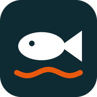

Pas de réseau ici
Cette page a besoin d'une connexion. Ta carte de pêche, elle, reste consultable : elle est enregistrée sur ton téléphone.
Afficher ma carte de pêche
Cette page a besoin d'une connexion. Ta carte de pêche, elle, reste consultable : elle est enregistrée sur ton téléphone.
Afficher ma carte de pêche